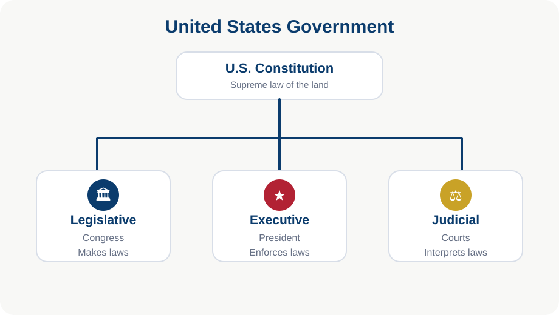
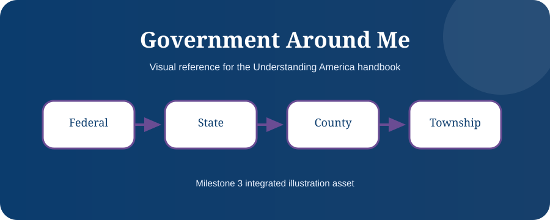

An American Citizen’s Life Journey
Government supports citizens through many life stages, from birth records to retirement benefits.
Learning Objectives
- Connect life events to agencies
- Understand services by stage
- See government as a lifelong system

Birth and School
State and local governments handle birth records and schools, while federal agencies may provide Social Security numbers, civil rights protections, and education funding support.
Driving, Work, and Taxes
PennDOT handles driver licenses. Employers report taxes. The IRS, Social Security, labor agencies, and workplace safety systems shape working life.
Home and Family
Property records, local taxes, zoning, marriage records, and schools involve county, township, state, and local agencies.
Retirement and Civic Life
Social Security, Medicare, voting, jury service, and community participation show that citizenship is a lifelong relationship with the constitutional system.

Chapter Summary
- Government appears at every life stage.
- Knowing which agency handles what saves time.
- Citizenship is active participation.
Key Terms
Constitution · Government · Rights · Citizenship · Federalism · Representation · Rule of Law
Review Questions
- What is the main idea of this chapter?
- How does this chapter connect to the Constitution?
- Why is this topic important for citizenship?
- Give one real-life example from this chapter.